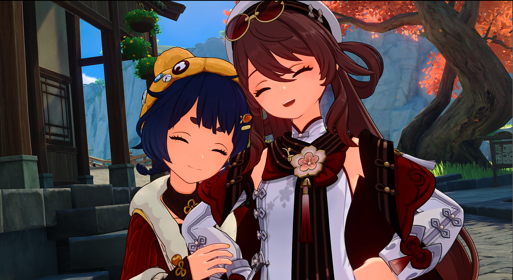

Why I Love Genshin Impact
My most favorite game to play is Genshin Impact. I really enjoy how beautiful the world looks — every place feels like an adventure. Exploring Teyvat and doing co-op makes me feel relaxed, especially when I'm emotionally stressed.
I also like the characters a lot. Each one has their own story, personality, and unique character designs, which makes the game more exciting. Sometimes I spend more time following the main quest or event story than actual battles because I enjoy the story and lore more (I especially like seeing cutscenes!). But of course, that doesn't mean I don't love the fighting or gameplay. They are the best!
For me, Genshin is not just a game — it holds many precious memories and friends that inspire me and allow me to overcome even my lowest moments.
"Wherever you go, whatever life throws at you... In Teyvat, the stars in the sky will always have a place for you."